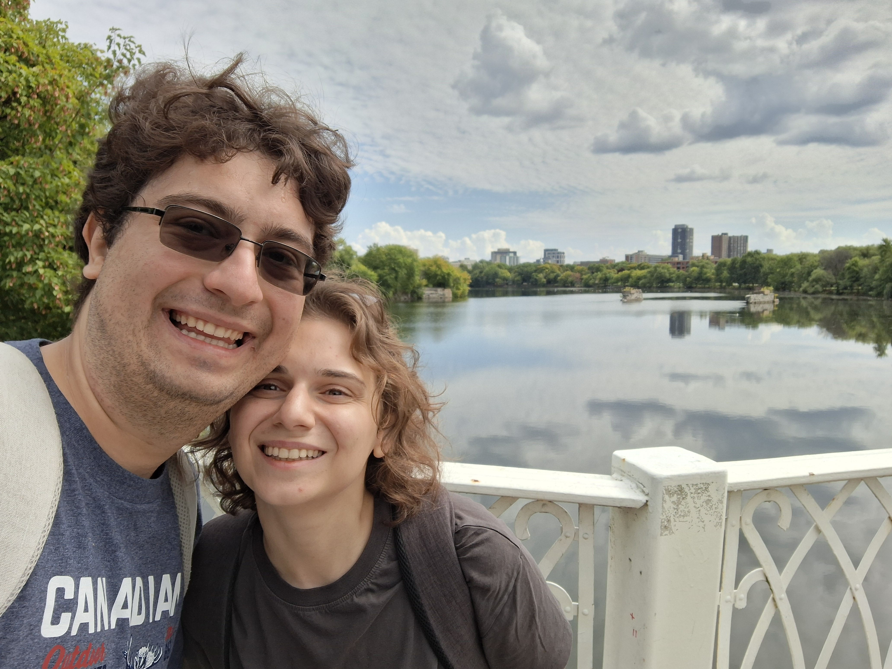

University of Manitoba
- Fall 2025: Mathematical Reasoning
- Summer 2025: Elementary Discrete Mathematics
- Winter 2025: Curves and Surfaces, Calculus II
- Fall 2024: Linear Algebra, Mathematical Reasoning
Bogazici University
- Fall 2023: Rings, Fields, and Galois Theory
- Fall 2022: Calculus II
Notes: